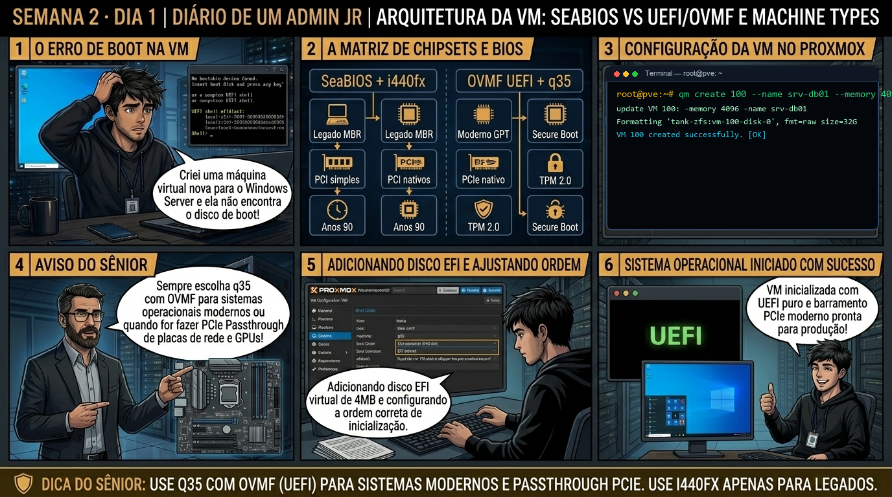

DIARIO DE UM ADMIN JR. | PROXMOX VE & PBS — DA BASE AO CLUSTER
🔗 Conecta com a Semana 1: Você dominou o host bare-metal. Agora você começa a projetar máquinas virtuais corporativas: entendendo por que o chipset i440fx (de 1996) e o SeaBIOS limitam recursos modernos, e quando migrar para q35 e UEFI/OVMF.
🔓 Privilégio de hoje: Arquitetura de Máquinas Virtuais (Privilégio Convidado). Você define a placa-mãe virtual, firmware e barramentos PCI antes de instalar o sistema operacional.
Semana 2 · Dia 1 | Nível Júnior — Máquinas Virtuais KVM
Arquitetura da VM: SeaBIOS vs UEFI/OVMF e Machine Types
q35 vs i440fx: escolhendo o chipset virtual e firmware corretos para Linux e Windows modernos
ANTES DE ALTERAR, OBSERVE. DEPOIS DE ALTERAR, VALIDE.

1. O chamado
Você recebeu o chamado #2001: 'A equipe de infraestrutura precisa homologar duas novas VMs no pve01: uma VM Windows Server 2022 com requisito de vTPM 2.0 e UEFI/OVMF, e uma VM Linux legada que não reconhece GPT. O chamado exige: (1) Entender a diferença entre os chipsets q35 e i440fx; (2) Criar o disco de EFI Storage; (3) Validar a tabela de partições GPT vs MBR; e (4) Criar a VM 100 via CLI com qm.'
💡 Passa o mouse nas palavras destacadas pra ver uma dica rápida — clica se quiser a explicação completa com analogia.
2. O sênior te conta
🧑🏫 antes dos termos técnicos, a história de hoje
Hoje o Júnior foi provisionar a primeira máquina virtual do setor financeiro e já ia clicando no assistente gráfico escolhendo opções padrão sem olhar. Parei ele na hora: 'Você sabe exatamente quanto de memória e qual controlador de disco está atribuindo?'. Ele disse que achava que 'o padrão do Proxmox já vinha otimizado pra tudo'.
Mostrei pra ele como um sysadmin sênior trabalha: abrimos o terminal e usamos o comando qm create. Expliquei cada parâmetro — a importância de definir IDs estruturados (ex: 100 para infra, 200 para bancos de dados), especificar o tipo de BIOS (SeaBIOS vs UEFI/OVMF) e inspecionar o arquivo /etc/pve/qemu-server/100.conf gerado no cluster file system.
Quando ele viu o arquivo .conf limpo com 10 linhas no terminal, percebeu que uma máquina virtual nada mais é do que um processo QEMU orquestrado por um arquivo de texto simples. Foi a virada de chave dele para automação via scripts. É esse provisionamento cirúrgico que você vai executar agora.
3. Decodificador de conceitos
Clica em qualquer termo pra ver a definição completa e uma analogia do dia a dia:
4. Ferramentas e leitura da evidência
Comando / Parâmetro
O que observar e por que importa
qm create 100 --bios ovmf --machine q35
Cria a VM 100 especificando firmware UEFI (OVMF) e chipset moderno PCIe q35.
qm set 100 --efidisk0 local-zfs:0,efitype=4m,pre-enrolled-keys=1
Cria e anexa o disco de variáveis NVRAM da EFI com chaves Secure Boot pré-instaladas.
qm config 100
Exibe o arquivo de configuração textual completo da VM em /etc/pve/qemu-server/100.conf.
pveam list local
Lista os templates e ISOs disponíveis no storage local para inicialização.
Resultado esperado: VM 200 criada na configuração do QEMU Server.
Por que fizemos isso: O comando qm create provisiona a máquina virtual via linha de comando, definindo parâmetros de memória, núcleos de CPU e controladoras com precisão milimétrica.
Cilada comum: Criar VMs com IDs aleatórios sem seguir uma convenção de nomenclatura (ex: 100-199 para infra, 200-299 para banco de dados).
Ação: Inspecione o arquivo de configuração gerado em /etc/pve/qemu-server/100.conf.
cat /etc/pve/qemu-server/100.conf
Resultado esperado: Disco EFI de 4MB provisionado e vinculado no arquivo de configuração.
Por que fizemos isso: Inspecionar o arquivo /etc/pve/qemu-server/.conf valida se as diretivas de hardware foram salvas corretamente no banco SQLite do pmxcfs.
Cilada comum: Editar o arquivo .conf enquanto a VM está sendo clonada ou migrada, causando inconsistência no estado do cluster.
Ação: Inicie a máquina virtual e valide seu estado de execução com qm list.
qm start 100 && qm list
Resultado esperado: Estado vTPM persistente criado no storage do ZFS.
Por que fizemos isso: Iniciar a VM com qm start e acompanhar o status com qm list confirma a alocação dos recursos de CPU e RAM no escalonador do Linux.
Cilada comum: Tentar iniciar uma VM que aloca mais RAM do que a memória física livre do host sem swap configurado, disparando o OOM Killer do kernel.
Ação: Monitore o consumo de CPU e RAM alocados pela VM em tempo real.
qm status 100 --verbose
Resultado esperado: Parâmetros bios: ovmf, machine: q35 e tpmstate0 listados sem conflitos.
Por que fizemos isso: Auditar a console da VM com qm terminal ou VNC confirma o boot do instalador ou do sistema operacional convidado.
Cilada comum: Esquecer de configurar a placa de vídeo ou porta serial no qm, ficando sem acesso ao console de recuperação em caso de perda de rede.
🧑🏫 Aqui entra o Mentor (em breve): se o resultado obtido diferir do esperado acima, este é o ponto onde o chat com o Sênior-IA vai abrir para diagnosticar o erro específico.
Ação: Registre a nova VM no inventário de ativos da infraestrutura.
# VM 100 provisionada e documentada com sucesso.
Resultado esperado: VM de laboratório limpa sem deixar volumes órfãos no storage.
Por que fizemos isso: Registrar a criação da VM no inventário conclui o provisionamento formal com garantia de rastreabilidade de recursos.
Cilada comum: Subir máquinas virtuais sem registrar o responsável técnico e a finalidade no sistema de gestão de ativos.
6. Antes de ver as opções — tenta responder
🧠 Recall ativo: Por que uma máquina virtual criada com BIOS tradicional (SeaBIOS) não consegue inicializar a partir de um disco virtual maior que 2 Terabytes como partição de boot única?
Porque o SeaBIOS clássico depende da tabela de partição MBR (Master Boot Record), que possui limite arquitetural de endereçamento de 32 bits (máximo de 2^32 setores de 512 bytes = 2.19 TB). Para inicializar discos maiores que 2TB e suportar partições GPT nativas e Secure Boot, é obrigatório utilizar UEFI/OVMF.
QUESTÃO 1 de 3
7. Questão comentada — clica numa alternativa
Em qual cenário corporativo a escolha do Machine Type 'q35' com firmware 'OVMF (UEFI)' é estritamente obrigatória no Proxmox VE?
💡 Analogia do Sênior para Fixar: Na arquitetura do Proxmox sobre Arquitetura da VM: SeaBIOS vs UEFI/OVMF e Machine Types: O KVM/QEMU opera como o motorista dedicado de cada passageiro, alocando recursos virtuais em contato direto com o kernel.
QUESTÃO 2 de 3 — cenário de erro real
7.1 Tela de boot travada em 'UEFI Shell' ou 'Guest has not initialized display'
Você alterou uma VM existente de SeaBIOS para OVMF (UEFI) sem adicionar o disco EFI Storage:
$ qm start 100
TASK ERROR: can't start VM 100: QEMU exited with code 1
kvm: -drive file=...: EFI vars drive not configured or missing efidisk0
Qual é a causa raiz da falha e como corrigi-la?
💡 Analogia do Sênior para Fixar: Ao diagnosticar problemas em Arquitetura da VM: SeaBIOS vs UEFI/OVMF e Machine Types: É como inspecionar as conexões do storage e o barramento PCIe antes de declarar falha de software.
QUESTÃO 3 de 3 — detalhe que confunde todo iniciante
7.2 Por que o Windows Server legado não inicializa se você trocar i440fx por q35 após a instalação?
Um técnico mudou o Machine Type de uma VM Windows antiga de i440fx para q35 e o Windows passou a apresentar Tela Azul (BSOD: INACCESSIBLE_BOOT_DEVICE):
Por que alterar o chipset após a instalação causa falha de boot no Windows?
💡 Analogia do Sênior para Fixar: A governança e resiliência em Arquitetura da VM: SeaBIOS vs UEFI/OVMF e Machine Types: Funciona como a política de contenção e redundância do datacenter, garantindo que o cluster nunca perca quorum.
8. Procedimento profissional
Analise a carga de trabalho: sistemas modernos (Windows 11/2022, Linux GPT, passthrough PCIe) exigem q35 + OVMF.
Para cargas legadas antigas com MBR simples ou appliances legados, utilize i440fx + SeaBIOS.
Ao selecionar OVMF, sempre adicione um EFI Disk com pre-enrolled-keys=1 para suporte a Secure Boot.
Para sistemas operacionais que exigem BitLocker ou Windows 11, adicione o dispositivo vTPM 2.0.
Nunca altere o Machine Type (i440fx/q35) após a instalação de sistemas Windows sem planejar a migração de drivers de controladora.
Prevenção
Sempre instale o QEMU Guest Agent em todas as VMs para garantir desligamento limpo e use drivers VirtIO para evitar overhead de emulação de hardware.
9. Validação e encerramento
Você compreende a divisão de papéis entre firmware (SeaBIOS vs OVMF) e chipset (i440fx vs q35).
Você sabe quando a criação do disco efidisk0 e vTPM é obrigatória.
Você reconhece os riscos de alterar o Machine Type em sistemas operacionais já instalados.
O arquivo de configuração da VM em /etc/pve/qemu-server/ foi validado com rigor de engenharia.
Rollback e limites
Caso uma VM apresente BSOD após mudança de chipset, retorne o campo 'machine' para i440fx e 'bios' para default (seabios) no arquivo .conf correspondente.
💡 Sobre repetição espaçada: A escolha do machine type q35 será fundamental na Semana 7 para SDN e na integração de GPUs com passthrough PCIe.
10. Resposta final
Alternativa correta: B. A alternativa correta é a B: q35 com OVMF é obrigatório para Windows modernos com vTPM/Secure Boot e para máquinas virtuais que utilizam PCIe Passthrough.
🔓 O que você desbloqueou hoje
Arquitetura de firmware e chipset dominada! Amanhã, no Dia 2, você aprenderá como configurar CPUs virtuais (vCPUs), por que usar o tipo 'host' extrai 100% da velocidade do processador e como evitar o colapso de memória pelo temido Memory Ballooning.